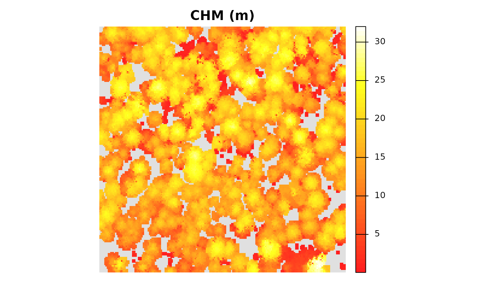
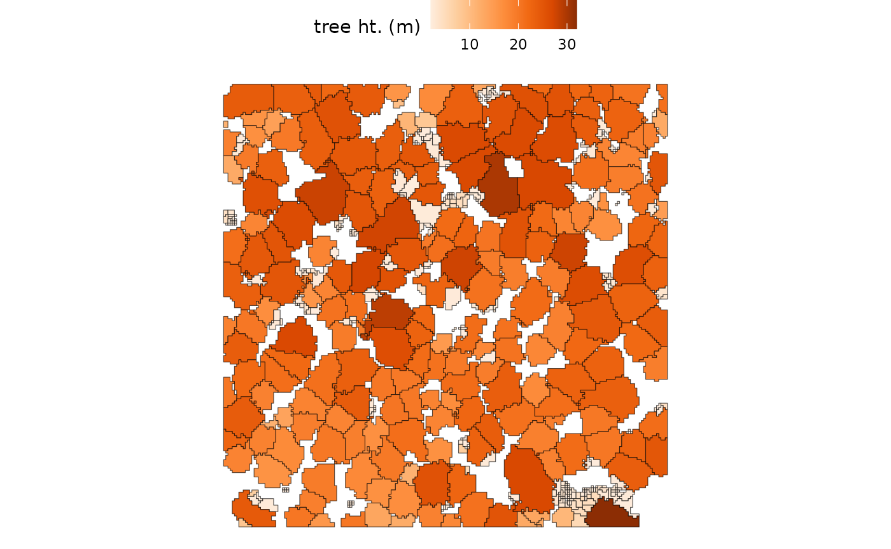
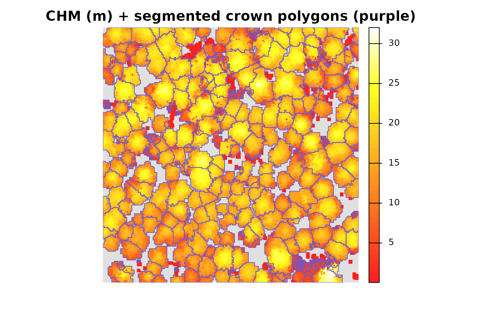
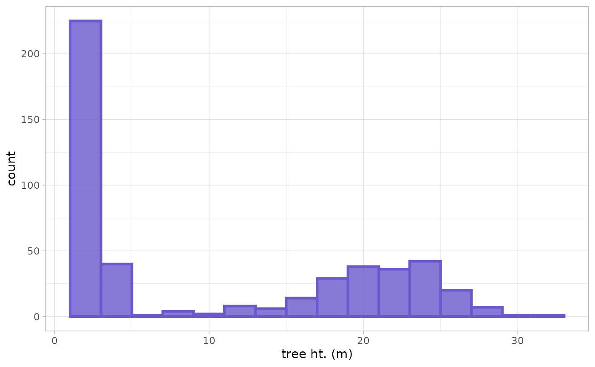
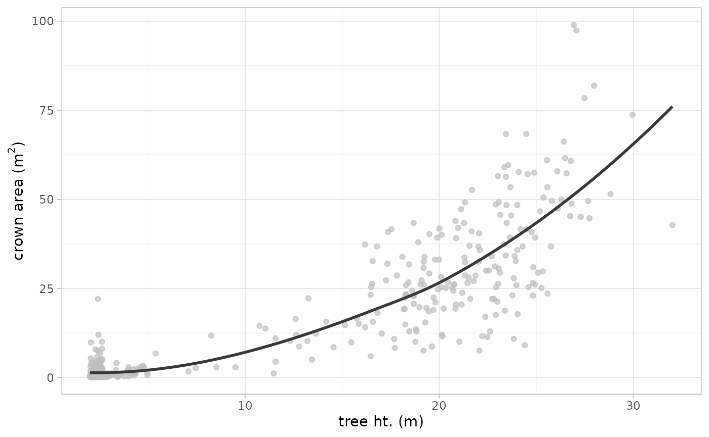
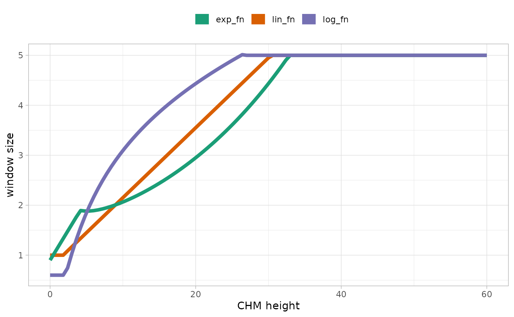
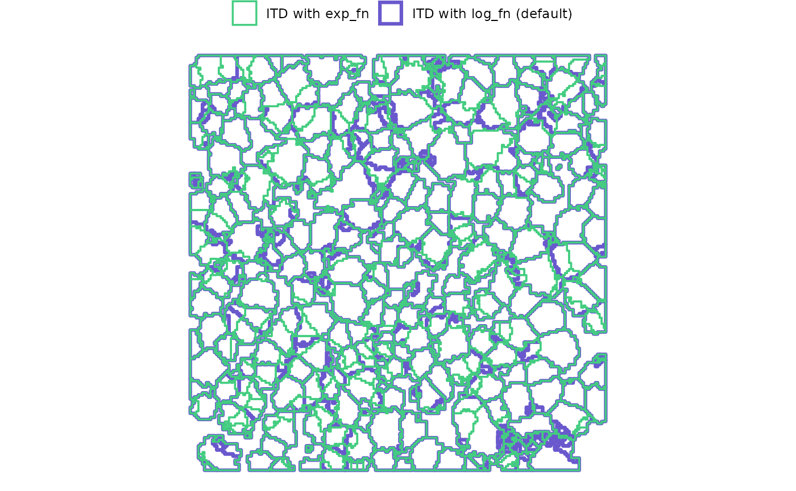
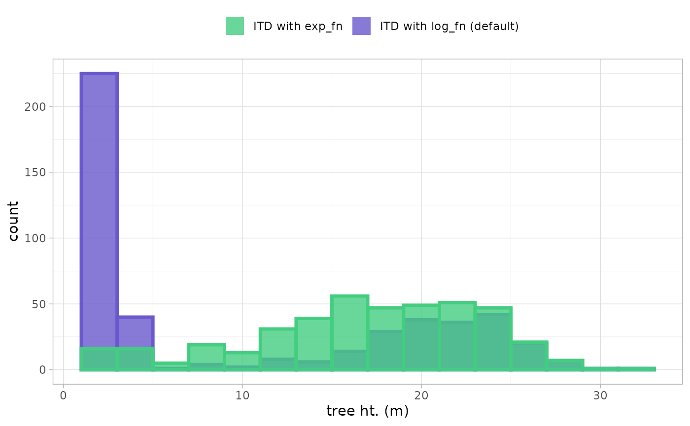

Generating a tree list from a CHM
Source:vignettes/articles/raster2trees-tutorial.Rmd
raster2trees-tutorial.RmdIndividual Tree Detection (ITD) from aerial point cloud data is
traditionally achieved using two main approaches: segmenting trees
directly from the point cloud by clustering points based on crown shape
and spacing (e.g. Li et
al. 2012), or using a Canopy Height Model (CHM) to delineate crowns
after identifying tree tops (local maxima; e.g. Popescu and Wynne
2004). It is important to note that the cloud2trees
package is built exclusively upon the CHM methodology for ITD. Users
wishing to explore direct point cloud segmentation methods should
consult the functionalities of the lidR package
(e.g. lidR::li2012()).
This section introduces the raster2trees() function,
which takes an already-generated CHM as input and performs the ITD. This
all-in-one function operates in two key steps: first, it performs the
initial tree detection using the lidR::locate_trees()
function with the lidR::lmf() (Local Maximum Filter)
algorithm. Second, the resulting tree-top points are used as “seeds” to
perform Marker-Controlled Watershed Segmentation via the
ForestTools::mcws() function. This segmentation method
inverts the CHM to treat crowns as basins, and the marker points prevent
over-segmentation when delineating crown boundaries at the conceptual
boundary where water would overflow. It is superior to non-controlled
watershed segmentation methods because the tree-top markers prevent
over-segmentation. Upon successful completion, the
raster2trees() function returns a spatial data frame
containing the tree crown polygons with the detected tree top point X
and Y coordinates to create spatial points if desired. This resulting
tree list provides the inherent ITD outputs of tree location and height,
along with crown area, but does not return any other biophysical tree
estimates (e.g. DBH).
Before using the raster2trees function, we recommend using the
itd_tuning() function to identify the most logical tree
detection to use with the crown architecture for the trees at your site.
See the xxxx tutorial to learn more on how to do this.
Let’s load the libraries we’ll use
We previously demonstrated
how to use cloud2raster() to process raw point cloud data
to generate a CHM.
We’ll continue with the small point cloud dataset that ships with the
lidR package for processing. We also need to define where
outputs should be written in the output_dir argument. For
demonstration we’ll use a temporary directory but you’ll likely want to
point to a permanent directory, for example:
C:/Data/MixedConifer.
# the path to a single .las|.laz file
# -or- the directory to a folder with many .las|.laz files
las_dir <- system.file(package = "lidR", "extdata", "MixedConifer.laz")
# output directroy
out_dir <- tempdir()Generating a tree list from a CHM: Defaults
First, we’ll run cloud2raster() with some custom
settings since we know how to setup the function to get what we want (review here)
cloud2raster_ans <- cloud2trees::cloud2raster(
input_las_dir = las_dir
, output_dir = out_dir
, chm_res_m = 0.44
, min_height = 0
, max_height = 66
)let’s look at the CHM really quick using
terra::plot()
terra::plot(
cloud2raster_ans$chm_rast
, col = grDevices::heat.colors(55, alpha = 0.88)
, colNA = "gray88"
, main = "CHM (m)"
, axes = F
)
we can also get a summary of the CHM cell values
terra::summary(cloud2raster_ans$chm_rast %>% setNames("CHM.meters"))
#> CHM.meters
#> Min. : 0.05
#> 1st Qu.:11.50
#> Median :15.55
#> Mean :15.00
#> 3rd Qu.:19.22
#> Max. :32.02
#> NA's :5242Now, we’ll run the raster2trees() function to segment
trees from the CHM that we just generated which is passed to the
chm_rast argument. This argument expects a
SpatRaster class object as loaded by the terra
package.
raster2trees_ans <- cloud2trees::raster2trees(
chm_rast = cloud2raster_ans$chm_rast
, outfolder = out_dir
)raster2trees() returns a spatial data frame with crowns
segmented and delineated via polygon geometries
raster2trees_ans %>% dplyr::glimpse()
#> Rows: 477
#> Columns: 6
#> $ treeID <chr> "1_481278.4_3813010.7", "2_481281.5_3813010.7", "3_48129…
#> $ tree_height_m <dbl> 24.430000, 22.230000, 15.850000, 13.440000, 22.070000, 2…
#> $ tree_x <dbl> 481278.4, 481281.5, 481294.7, 481312.7, 481325.0, 481336…
#> $ tree_y <dbl> 3813011, 3813011, 3813011, 3813011, 3813011, 3813011, 38…
#> $ crown_area_m2 <dbl> 9.4864, 12.1968, 15.4880, 4.4528, 7.7440, 25.5552, 24.00…
#> $ geometry <GEOMETRY [m]> POLYGON ((481276.4 3813011,..., MULTIPOLYGON ((…The CHM-based tree detection process yielded 477 unique trees (data rows) with 6 tree attributes (data columns). Let’s break down what these attributes are:
-
treeID: A unique identifier for each detected tree -
tree_height_m: This is the tree top height based on the local maximum identified for each tree -
tree_x: The X coordinate of the tree top point -
tree_y: The Y coordinate of the tree top point -
crown_area_m2: The tree’s crown area in square meters -
geometry: The vertices for the tree crown polygon
Let’s take a look at the crown polygons colored by the tree heights:
raster2trees_ans %>%
ggplot2::ggplot(mapping = ggplot2::aes(fill = tree_height_m)) +
ggplot2::geom_sf() +
ggplot2::scale_fill_distiller(palette = "Oranges", name = "tree ht. (m)", direction = 1) +
ggplot2::theme_void() +
ggplot2::theme(legend.position = "top", legend.direction = "horizontal")
Visually, it seems like there are a lot of small trees (lighter color) in the 2.0 m to 2.5 m height range while the dominant and co-dominant trees are between 18.4 m and 32.0 m in height
it is also easy to look at the tree crown polygons overlaid on the
CHM. We’ll first demonstrate with terra::plot()
terra::plot(
cloud2raster_ans$chm_rast
, col = grDevices::heat.colors(55, alpha = 0.88)
, colNA = "gray88"
, main = "CHM (m) + segmented crown polygons (purple)"
, axes = F
)
terra::plot(
raster2trees_ans %>%
terra::vect()
, add = T
, border = "slateblue3"
, col = NA, lwd = 1
)
Let’s look at a histogram of the tree heights to get a better feel for what is going on
raster2trees_ans %>%
ggplot2::ggplot() +
ggplot2::geom_histogram(
mapping = ggplot2::aes(x = tree_height_m)
, color = "slateblue3"
, fill = "slateblue3"
, binwidth = 2
, alpha = 0.8
, lwd = 1.1
) +
ggplot2::scale_x_continuous(labels = scales::comma) +
ggplot2::scale_y_continuous(labels = scales::comma) +
ggplot2::labs(x = "tree ht. (m)") +
ggplot2::theme_light()
we can also inspect the detected trees by comparing the tree height against crown area with the expectation that shorter trees have smaller crowns while taller trees have larger crowns
raster2trees_ans %>%
ggplot2::ggplot() +
ggplot2::geom_point(
mapping = ggplot2::aes(x = tree_height_m, y = crown_area_m2)
, color = "grey"
, alpha = 0.7
) +
ggplot2::geom_smooth(
mapping = ggplot2::aes(x = tree_height_m, y = crown_area_m2)
, color = "grey22"
, se = F
) +
ggplot2::labs(
x = "tree ht. (m)"
, y = expression(paste("crown area (m"^2,")"))
) +
ggplot2::theme_light()
Typically, we would not expect to see large crown areas associated with short trees, so we may need to adjust the window search size to adjust the search radius for shorter trees in this data set
If we look in the directory that we set the outfolder
argument to in the raster2trees() call, we will see that
the function wrote two files:
- final_detected_crowns.gpkg: This is a Geopackage file containing the individual tree crown polygons with the attributes we looked at
- final_detected_tree_tops.gpkg: This is a Geopackage file containing the individual tree top locations as points attributed with each variable we looked at
If you execute the raster2trees() process multiple times
using the same outfolder location, then these two files
will be overwritten. As such, if you intend to perform multiple
iterations of the processing in the same outfolder location
and wish to retain the results, it is recommended you rename the
final_detected_*.gpkg files before running the next
iteration.
list.files(out_dir, pattern = "*.gpkg$")
#> [1] "final_detected_crowns.gpkg" "final_detected_tree_tops.gpkg"Generating a tree list from a CHM: Custom
By default, the raster2trees() function implements the
logarithmic variable window function that is built into cloud2trees for
tree detection. Should you want to select a different function to apply,
we can see a list of them
cloud2trees::itd_ws_functions() %>% names()
#> [1] "lin_fn" "exp_fn" "log_fn"we can quickly plot what shapes these take over a range of
x values which represent CHM cell heights in the ITD
algorithm
ggplot2::ggplot() +
ggplot2::geom_function(
fun = cloud2trees::itd_ws_functions()$lin_fn
, mapping = ggplot2::aes(color="lin_fn")
, lwd = 1.7
) +
ggplot2::geom_function(
fun = cloud2trees::itd_ws_functions()$exp_fn
, mapping = ggplot2::aes(color="exp_fn")
, lwd = 1.7
) +
ggplot2::geom_function(
fun = cloud2trees::itd_ws_functions()$log_fn
, mapping = ggplot2::aes(color="log_fn")
, lwd = 1.7
) +
ggplot2::scale_color_brewer(palette = "Dark2") +
ggplot2::xlim(0,60) +
ggplot2::labs(x = "CHM height", y = "window size", color = "") +
ggplot2::theme_light() +
ggplot2::theme(legend.position = "top") +
ggplot2::guides(color = ggplot2::guide_legend(override.aes = list(lwd = 5)))
This shows us that there is a lin_fn (linear),
exp_fn (exponential), and log_fn (logarithmic)
function that relate CHM-based tree top height to crown size for
detecting individual trees.
If we want to use the exp_fn we can execute
raster2trees() and directly specify the exp_fn
using the itd_ws_functions function list
raster2trees_ans_exp <- cloud2trees::raster2trees(
chm_rast = cloud2raster_ans$chm_rast
, outfolder = out_dir
, ws = itd_ws_functions()[["exp_fn"]]
)Let’s spatially compare the detected crowns
# make a custom color palette to mimic
# ...the RColorBrewer palette without needing to load that package
cust_cols = c("seagreen3", "slateblue3")
# plot
ggplot2::ggplot() +
ggplot2::geom_sf(
data = raster2trees_ans
, mapping = ggplot2::aes(color = "ITD with log_fn (default)")
, fill = NA
, lwd = 1.1
) +
ggplot2::geom_sf(
data = raster2trees_ans_exp
, mapping = ggplot2::aes(color = "ITD with exp_fn")
, fill = NA
, lwd = 0.6
) +
ggplot2::scale_color_manual(values = cust_cols) +
ggplot2::labs(color = "") +
ggplot2::theme_void() +
ggplot2::theme(legend.position = "top", legend.direction = "horizontal")
A few areas of difference are apparent. Using the exp_fn
for the window search function resulted in 422 detected trees whereas
the default, log_fn yielded 477 trees (change of
-11.5%)
to really see what is going on, let’s look at the height distribution of the detected trees
ggplot2::ggplot() +
ggplot2::geom_histogram(
data = raster2trees_ans
, mapping = ggplot2::aes(
x = tree_height_m
, fill = "ITD with log_fn (default)"
, color = "ITD with log_fn (default)"
)
, alpha = 0.8
, lwd = 1.2
, binwidth = 2
) +
ggplot2::geom_histogram(
data = raster2trees_ans_exp
, mapping = ggplot2::aes(
x = tree_height_m
, fill = "ITD with exp_fn"
, color = "ITD with exp_fn"
)
, alpha = 0.8
, lwd = 1.2
, binwidth = 2
) +
ggplot2::scale_fill_manual(values = cust_cols) +
ggplot2::scale_color_manual(values = cust_cols) +
ggplot2::scale_x_continuous(labels = scales::comma) +
ggplot2::scale_y_continuous(labels = scales::comma) +
ggplot2::labs(x = "tree ht. (m)", fill = "") +
ggplot2::theme_light() +
ggplot2::theme(legend.position = "top", legend.direction = "horizontal") +
ggplot2::guides(color = "none") 